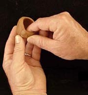
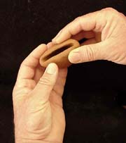
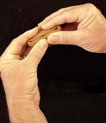
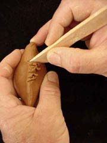
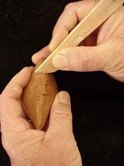
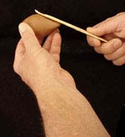
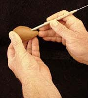

| How to Make a Clay Whistle
Technique by Chris Henley
Below you will find a sequence of photographs with accompanying text that describes
the fundamentals of a clay whistle making technique. I discovered
quite by accident sometime around 1970. It is simple and works
every time, if you follow the sequence. However, there are a few
variables that come into play. Generally, the more plastic the clay,
and the smaller the inclusions (grog/sand) the easier it is to form
the more delicate parts. I have never tried this technique
with polymer "clay". However, I have had reports from
others who say they have had some success.
I have tried to point out the other variables as they pertain
to the process in the accompanying text. You will probably have
to fiddle around some to get yours to sound, but don't be discouraged!
I have tried to distill the technique to the essential elements.
It lends itself to considerable variation. So, experiment, push
the limits, keep trying! Remember, it's just clay.
|  |
1. Form a pinch pot. Most
any size will do. Just keep in mind that the chamber size
will be one of the factors that impacts tone. Try to keep
the wall thickness as uniform as possible; it will serve
you well at a later stage. |
|  |
2. Pinch the edges of the
pot together. Just the edges. The purpose here is to form
the basic chamber. |
|  |
3. You are making a hollow
form with as much interior volume as you can. |
|  |
4. "Sew" the edges
together by scoring. |
|  |
5. Smooth the scored edges.
You can use any kind of tool that will accomplish the task.
Just your fingers will do. The goal is to get an air tight,
sealed, hollow form. |
|  |
6. Once you have the form
sealed you can begin to form and shape it. As will become
apparent, the Fat Taco or Empanada shape you end up with
at this stage lends itself well to a variety of designs.
Mine tend toward the organic, or critter forms.
You don't need to do any forming at all
if you just want something that will make a tone (s).
However, if you do plan to form or attach anything, this
is the time to do it. My suggestion is to just learn to
make the whistle and then, when you have mastered that,
Let the Rumpus Begin! Here I'm paddling the shape. You
can be very aggressive or, as a friend of mine says, "Spank
It !" |
|  |
7. When you get the shape
and form you want.....after all the attachments have been
made, then, and only then can you safely pierce the form.
What you see at the left illustrates the tool and the method
I use to form the wedge to split the air. The real whistle
makers have a term for this part of the whistle, but I don't
know what it is. Anyway, take the blunt end of a dowel or
needle tool and, holding it at about a 45 degree angle to
the surface of the form, push it into the interior (between
20 and 60 degrees will work, too). Don't push it all the
way through both sides. It is important that you pull the
tool out at the same angle that you pushed it in. You just
want to put a hole in one wall. A clean, sharp (squared)
edge on the dowel, will produce a clean hole and a sharp
wedge. Be sure you check to see if the little "pill"
of clay that is formed on the end of the tool doesn't re-plug
the hole when you extract the dowel. I like to push the
"pill" into the hollow form and have it as a rattle.
|
Next Page > How to Make a Clay Whistle II
Related Articles
How to Make a Nightingale Cup
How to Make a Puzzle Mug
In Their Cups - The Story of the English
Puzzle Mug
More Articles
|